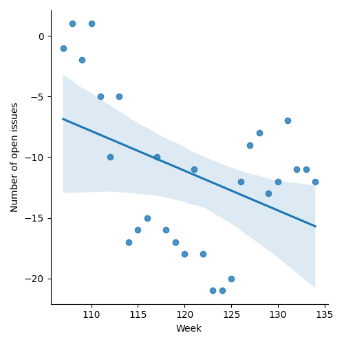
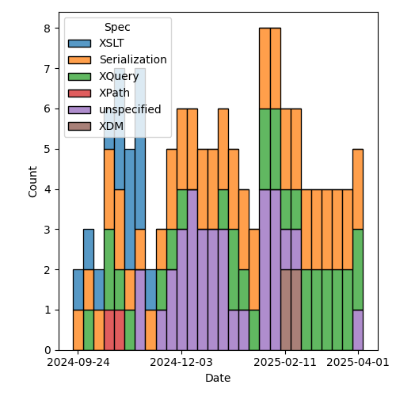
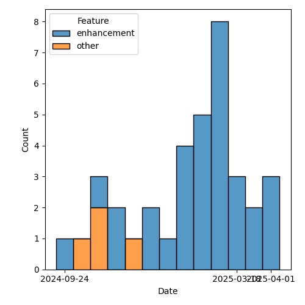

QT4 CG Meeting 116 Minutes 2025-04-08
Meeting index / QT4CG.org / Dashboard / GH Issues / GH Pull Requests
Table of Contents
- Draft Minutes
- Summary of new and continuing actions
[0/10] - 1. Administrivia
- 2. Technical agenda
- 2.1. Review of pull requests
- 2.1.1. PR #1915: 1902b bin:unpack out of range error
- 2.1.2. PR #1914: 501 Error handling: try/finally
- 2.1.3. PR #1910: 1021 (part 1) Add $options arg to doc() and doc-available()
- 2.1.4. PR #1908: 1520 Allow forwards references to named item types
- 2.1.5. PR #1897: 1876 In fn:replace(), merge the $replacement and $action parameters
- 2.1.6. PR #1895: 1881 Function identity for maps and arrays
- 2.1.7. PR #1901: 1363 fallback becomes a value not a function
- 2.1.8. PR #1819: 451 Multiple schemas in XSLT
- 2.1. Review of pull requests
- 3. Any other business
- 4. Adjourned
Draft Minutes
Summary of new and continuing actions [0/10]
[ ]QT4CG-082-02: DN to work with NW to come to agreement on the fn:ranks proposal[ ]QT4CG-107-05: JLO and DN to consider a proposal for system defined records.[ ]QT4CG-112-01: JLO to propose a concrete example that uses “.” in a ~%method~s.[ ]QT4CG-113-02: NW to investigate a way to show extra attributes in the syntax summary.[ ]QT4CG-115-01: MK to give an example of params passed automatically through next-match using a 3.0 version control[ ]QT4CG-115-02: JWL to write a few tests for xsl:record[ ]QT4CG-116-01: Add a specific error code for unsupported options on doc and doc-available[ ]QT4CG-116-02: MK to improve the description of the results of validation[ ]QT4CG-116-03: NW to review the star/plus/delta symbols in the ToC. (See 1838)[ ]QT4CG-116-04: MK to correct the missing “or $Y” infn:function-identity().
1. Administrivia
1.1. Roll call [12/13]
Regrets: BTW
[X]David J Birnbaum (DB)[X]Reece Dunn (RD)[X]Sasha Firsov (SF) [x:08-][X]Christian Grün (CG)[X]Joel Kalvesmaki (JK) [x:04-][X]Michael Kay (MK)[X]Juri Leino (JLO)[X]John Lumley (JWL) Scribe.[X]Dimitre Novatchev (DN)[X]Wendell Piez (WP)[X]Ed Porter (EP)[ ]Bethan Tovey-Walsh (BTW)[X]Norm Tovey-Walsh (NW).
1.2. Accept the agenda
Proposal: Accept the agenda.
Accepted.
1.2.1. Status so far…
These charts have been adjusted so they reflect the preceding six months of work.

Figure 1: “Burn down” chart on open issues

Figure 2: Open issues by specification

Figure 3: Open issues by type
1.3. Approve minutes of the previous meeting
Proposal: Accept the minutes of the previous meeting.
JWL: Mike was the chair; for the record. (Minutes have been updated accordingly.)
Accepted.
1.4. Next meeting
The next meeting is scheduled for 15 April 2025.
No regrets heard.
1.5. Review of open action items [0/6]
(Items marked [X] are believed to have been closed via email before this agenda was posted.)
[ ]QT4CG-082-02: DN to work with NW to come to agreement on the fn:ranks proposal[ ]QT4CG-107-05: JLO and DN to consider a proposal for system defined records.[ ]QT4CG-112-01: JLO to propose a concrete example that uses “.” in a ~%method~s.[ ]QT4CG-113-02: NW to investigate a way to show extra attributes in the syntax summary.[ ]QT4CG-115-01: MK to give an example of params passed automatically through next-match using a 3.0 version control[ ]QT4CG-115-02: JWL to write a few tests for xsl:record
1.6. Review of open pull requests and issues
This section summarizes all of the issues and pull requests that need to be resolved before we can finish. See Technical Agenda below for the focus of this meeting.
1.6.1. Blocked
1.6.2. Merge without discussion
The following PRs are editorial, small, or otherwise appeared to be uncontroversial when the agenda was prepared. The chairs propose that these can be merged without discussion. If you think discussion is necessary, please say so.
- PR #1913: 1911 Clarifications for regular expressions
- PR #1904: 1832 Operator Associativity
- PR #1898: 1624b Expand rules for document node subtyping
Proposal: merge these PRs without further discussion
JLO: There’s a typo in #1904; I added a comment.
Accepted.
1.6.3. Close without action
It has been proposed that the following issues be closed without action. If you think discussion is necessary, please say so.
- Issue #1900: Records: instance checks
- Issue #1846: %method functions, dynamic function calls
- Issue #982: scan-left, scan-right: position argument, array functions
- Issue #564: Sorted maps
Proposal: close these issues without further action.
Accepted.
2. Technical agenda
2.1. Review of pull requests
2.1.1. PR #1915: 1902b bin:unpack out of range error
See PR #1915
MK introduces the PR.
- MK: This is purely adding a couple of error conditions and a few editorial improvements. The new error is for integers that are too large.
- JLO: Looking at the source for the PR, it looked like an error condition was removed.
- MK: I think I corrected that; I redid the PR at one point.
- RD: The type constraints could enforce a normal error for zero or negative lengths.
- MK: We could have changed that but we didn’t.
- JLO: I think it would be a good idea to change the signatures.
- Octet-out-of-range and [scribe missed the other error] have been removed.
- MK: That’s correct; we made an enumeration so those can’t occur.
Proposal: Accept this PR.
Accepted.
2.1.2. PR #1914: 501 Error handling: try/finally
See PR #1914
CG introduces the PR with a discussion of finally.
- CG: The PR adds a finally clause.
- … A finally clause that returns a value raises an error.
- … If the finally raises an error, that’s the error that’s returned.
- MK: Did you consider concatenating the results of the try and finally expressions?
- CG: Yes.
- … Many languages, especially imperative languages ignore the result
Proposal: Accept this PR.
Accepted.
2.1.3. PR #1910: 1021 (part 1) Add $options arg to doc() and doc-available()
See PR #1910
- MK: This basically takes the same options we added to
fn:parse-xmland adds them to the document functions.- … The options are the same as
fn:parse-xmlplusstable.
- … The options are the same as
- MK: The definition of
stableis refined somewhat. - MK: The same options are carried through into
fn:doc-available- … If
stableistrue(), then your availablility is guaranteed.
- … If
- JWL: I assume things like support for XInclude is implementation dependent?
- MK: There’s a clause about that under error conditions.
- JWL: Is there any way to determine if your implementation can do XInclude or the like?
- MK: No.
- JWL: When you take the XInclude option, does that imply that if you set it
when you do
fn:doc-available, that everything would have to be resolved at availability time? - MK: Yes, you have to do it and cache the result.
- CG: My question is partly answered, maybe we should raise a custom error if the supplied options cannot be applied. An implementation that returns a document from a database could raise the error when ever any option is specified.
- MK: The error codes are already quite fuzzy. I was reluctant to add to them.
- … For example, if XInclude fails because the URI you supplied is not hierarchical, which error should you return?
- JLO: I’m somewhat relieved but quite sad that I wasn’t able to provide the PR myself.
- … I’d also like to have a specific error code for the case where an implementation can’t satisfy the options requested.
- MK: If there is a schema processor but it can’t handle a particular schema, that might be a bit different.
ACTION QT4CG-116-01: Add a specific error code for unsupported options on doc and doc-available
Some discussion of the meaning of stability on fn:doc-available.
- JK: What are the effects of the act of validation?
- MK: The effect of schema validation is that you get a document back with type annotations.
- NW: It can also expand attribute default values.
- JK: Can this be made more explicit?
ACTION QT4CG-116-02: MK to improve the description of the results of validation
k+ WP: An annotated PSVI?
- MK: Well, it’s not a full PSVI.
- WP: Is that standardized?
Some discussion of the degree of standardization in the validate expression.
- MK: There’s nothing new here, it’s the equivalent of applying the
validateexpression to the document. - CG: A trivial observation, some of the defaults use parentheses for true and false and some don’t.
- MK: I’m never sure how to deal with that.
- DB: Is there a reason why RELAX NG validation isn’t an option?
- MK: Primarily that it’s not a technology standardized by W3C.
Some discussion of raising it as possible enhancement.
Proposal: Accept this PR.
Accepted.
ACTION QT4CG-116-03: NW to review the star/plus/delta symbols in the ToC. (See 1838)
You to Everyone
2.1.4. PR #1908: 1520 Allow forwards references to named item types
See PR #1908
- MK: This is another Gunther Radamacher bug. I decided to just remove the restriction.
- … Forwards references are now allowed.
- RD: So it works like variable declarations.
Consensus, yes, you can have forward references to variables and functions.
Proposal: Accept this PR.
Accepted.
2.1.5. PR #1897: 1876 In fn:replace(), merge the $replacement and $action parameters
See PR #1897
- MK: This was a suggestion of CG’s that I’ve taken on board and implemented.
- … There’s no change in functionality, it just merges two arguments into one.
- … I have also clarified what it means for a replacement string that contains capture groups.
Proposal: Accept this PR.
Accepted.
2.1.6. PR #1895: 1881 Function identity for maps and arrays
See PR #1895
MK introduces the PR.
- MK: We added a PR for function identity, but we didn’t clarify what that meant
for maps and arrays.
- … This PR says the do have identity, but it doesn’t have any effect exception the identity function.
- MK: In the data model, I expanded the map and array item descriptions.
- MK: In F&O, we explicitly say that labels are ignored when considering function identity.
ACTION QT4CG-116-04: MK to correct the missing “or $Y” in fn:function-identity().
- MK: This makes identity well defined, if not especially useful.
- JLO: What are the implications that map identity is implementation dependent?
- … Is there a possibility where functions will behave differently?
- MK: All it’s telling you that if you use
fn:function-identityto get the identity of a map or array, what you get is implementation dependent.- … This leaves our options open in the future.
Proposal: Accept this PR.
Accepted.
2.1.7. PR #1901: 1363 fallback becomes a value not a function
See PR #1901
MK introduces the PR. We’ve had a lot of debate about what to do with map:get and array:get if you request a value that doens’t exist. And my proposal not to raise an error for an out-of-range index in array:get didn’t meet with universal favor.
- MK: Having a default value rather than a function is a small reduction in capability but a simplification.
(The PR turns out to be on the wrong base; we’ll review again next week.)
- DN: I’m trying to understand what this means for arrays. Whatever the default value is that’s specified, this would be exactly the same as what we discussed previously that there is no longer an exception when an index is out-of-bounds.
- MK: No, the default is still to throw an error. The function has two different signatures so that the absence of a fallback can be detected.
2.1.8. PR #1819: 451 Multiple schemas in XSLT
See PR #1819
- MK: I thought initially this was a fairly big proposal, but it turned out to be pretty incremental.
- MK: Different parts of a stylesheet may use different schemas.
- … An xsl:import-schema declaration can include a role attribute (e.g., “input” vs. “output”)
- … You can then validate against the schema with the specified role.
- MK: Different result documents can be validated against different schemas.
- … It’s done with a standard attribute that can appear on any element.
- … It can be applied at the package level.
- MK: The
xsl:import-schemainstruction gains theschema-roleattribute. - MK: Section 3.15.1 describes how the
schema-roleattribute works. - MK: There’s a restriction that the schemas must be compatible.
- … They can’t have conflicting declarations.
- … You can’t validate the input against version 1 of a schema and the output against version 2, if those schemas are not compatible.
- … The restriction is necessary because the otherwise the schema type names wouldn’t be unique.
- WP: Why are we calling it role, and not name for example?
- MK: Naming is always hard. And “name” just seems especially overused.
- WP: The two schemas have to have two universes of types that are distinct.
- MK: They can overlap, as long as the import some common schema.
Proposal: Accept this PR.
Accepted.
3. Any other business
None heard.